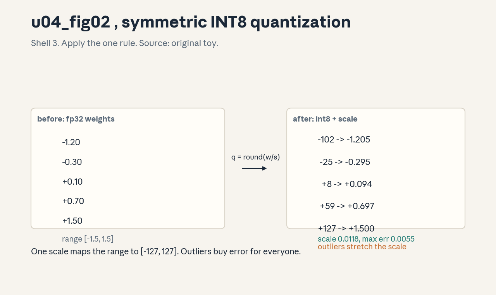
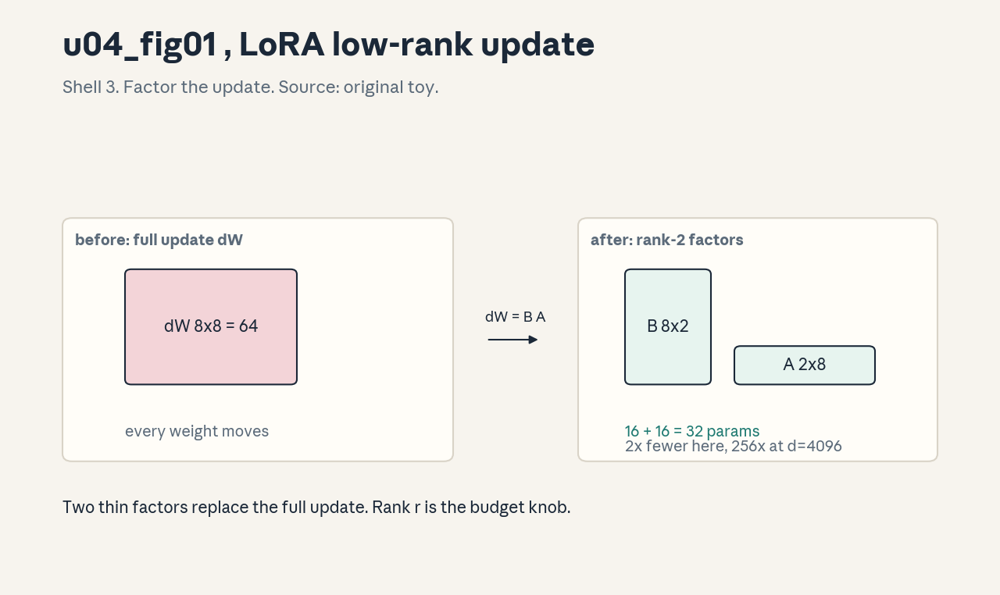
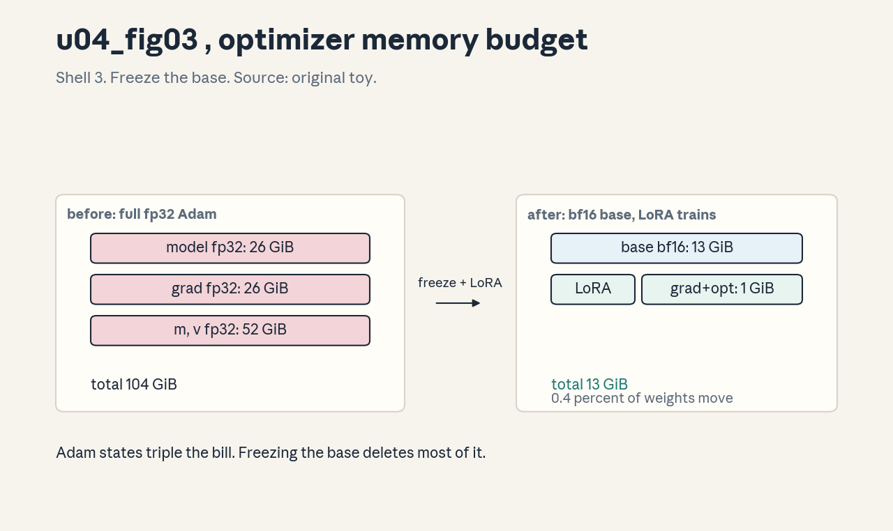
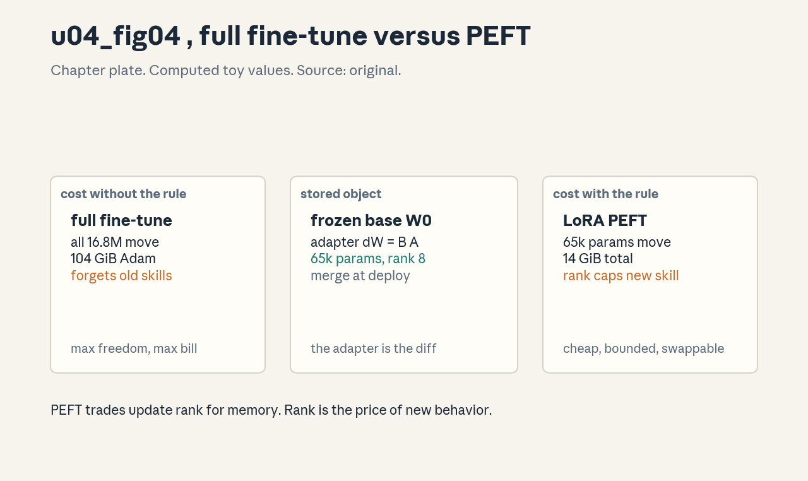

U04 · Training and efficient adaptation
U04 , Training and efficient adaptation
Prerequisites: P10, P11, P12, P15. Bridge links in
../prerequisites.md.
Lecture anchor: L3 (Oct 9, 2026), hardware parts L5 (Oct 30, 2026).
Claim class: OFFICIAL-SYLLABUS for pretraining, SFT, LoRA, data/loss.
REQUESTED-BRANCH for quantization, hardware efficiency, numerical
precision, full-vs-PEFT, regression tests, resource budgets (hardware
trade-offs are named in L5). All leaves: PLANNED / SOURCE ATTRIBUTION
PENDING until slide or transcript extraction verifies them.
Notation: see ../notation_and_shapes.md. Glossary: ../glossary.md.
Not yet understood
Concepts this unit uses but does not teach. Each one arrives in a later unit.
- Preference tuning (U05): DPO, RLHF, reward models.
- Reasoning RL (U06): GRPO, verifiers, test-time scaling.
- RAG and agents (U07): retrieval pipelines and ReAct loops.
- LLM evaluation (U08): judging, bias, calibration, intervals.
Local remediation , loss, Adam, bytes
Do this block first if diagnostic items D7 or D10 were not full marks.
R0.1 Cross-entropy again. True [1, 0], predicted [0.7, 0.3]: loss = -log 0.7 = 0.357 nats. The loss only sees the true class’s probability. Everything in pretraining and SFT is this number summed over tokens.
R0.2 Adam states. Adam keeps two moving averages per parameter (m, v). In fp32 that is 8 bytes per parameter on top of the weights and gradients. A 7B model in fp32 Adam: 7e9 * (4 + 4 + 8) bytes = 112 GB. The optimizer is the memory iceberg.
R0.3 Byte arithmetic. fp32 = 4 bytes, fp16/bf16 = 2, int8 = 1. 7B params: fp32 28 GB, fp16 14 GB, int8 7 GB. Every precision decision in this unit is this arithmetic.
C01: pretraining
Leaf id cme295-U04-C01. Claim class OFFICIAL-SYLLABUS.
Status PLANNED / SOURCE ATTRIBUTION PENDING.
-
Source mapping, scope, objectives, dependencies. Maps to L3 “Pretraining”. Scope: next-token training at scale. Objectives: state the objective, the data requirement, and the compute scaling picture. Depends on P10, U01 C11.
-
Motivating question and toy. Question: where does the base model’s knowledge come from? Toy: the LM loss from U01 C11 summed over trillions of tokens. No labels, the next token is the label.
-
Mental model. Pretraining is the act of reading the internet with a test after every word: predict the next one. The model that predicts well must compress grammar, facts, and reasoning patterns into its weights. Scale (data, params, compute) is the lever.
-
Objects, symbols, units, shapes, assumptions. Objective: sum over tokens of -log p(x_t | x_{<t}). Data: trillions of tokens, mixed domains. Compute: ~6 N D FLOPs (N params, D tokens). Assumption: more compute with balanced N and D helps (Chinchilla: scale both together).
-
Derivation / mechanism. The 6ND estimate: per token, forward ~2N, backward ~4N FLOPs. Chinchilla (Hoffmann et al., 2022): the compute-optimal ratio is roughly D ~= 20 N (tokens to params). Train a 7B model on ~140B tokens, not 1T, at fixed compute (the public Chinchilla finding).
-
Computed example. Toy: N = 7e9, D = 1.4e11. FLOPs = 6 * 7e9 * 1.4e11 = 5.9e21. At 1e15 FLOP/s effective per GPU, that is 5.9e6 GPU-seconds ~= 68 GPU-days on one card, or hours on thousands. The arithmetic is the budget.
-
Algorithm and reference implementation.
pretrain_step(batch): logits = model(batch[:, :-1]), loss = lm_loss(logits, batch[:, 1:]), loss.backward(), optimizer.step(). The shift by one is the whole trick. -
Correctness checks and expected output. Check: loss starts near log V and falls, doubling compute at the Chinchilla ratio beats lopsided scaling, loss spikes are investigated, not ignored. If loss never falls below log V, the shift is wrong.
-
Complexity, memory, statistical efficiency, stability, costs. O(6ND) FLOPs. Memory: weights + optimizer + activations (R0.2). Loss spikes from bad batches or too-high LR are the classic instability, data filtering and LR schedules are the guards.
-
Nearest alternatives and selection boundaries. Train from scratch vs continue a public base. Choose continued pretraining when the domain is special and data is moderate, from scratch only with Chinchilla-scale budgets.
-
Failure case, broken assumption, counterexample. Broken assumption: more data always helps. Counterexample: duplicated or toxic data degrades the model, quality beats quantity past a point. Deduplication and filtering are part of training, not decoration.
-
Research reading and falsifiable extension. Read Hoffmann et al. (2022, Chinchilla) and the GPT-3 data sections. Extension: train two tiny models at fixed FLOPs, one param-heavy, one data-heavy, report which wins.
-
Breadth recall, deep oral ladder, unfamiliar transfer. Recall: write the 6ND rule. Ladder: define the objective -> compute the toy budget -> justify the 20:1 ratio -> implement pretrain_step -> predict the dirty-data failure. Transfer: pretraining for code, state the data mix change.
-
Lab/exercises with answers separated. E1: FLOPs for N = 1e9, D = 2e10. E2: GPU-days at 5e14 FLOP/s effective. E3: why the shift-by-one? Key:
../keys/u04_answers.mdR1-R3. -
Visual units, provenance, accessibility, audit rows. Atomic units: N, D, FLOPs. A table (N | D | FLOPs | GPU-days) is the right medium. Logged as text-table with the computed toy.
C02: data/loss
Leaf id cme295-U04-C02. Claim class OFFICIAL-SYLLABUS.
Status PLANNED / SOURCE ATTRIBUTION PENDING.
-
Source mapping, scope, objectives, dependencies. Maps to L3 (pretraining data and loss are inseparable). Scope: what the loss sees and what the data must be. Objectives: explain packing, loss masking, and the data quality pipeline. Depends on C01, P10.
-
Motivating question and toy. Question: documents have different lengths, how do you fill a batch without wasting half of it? Toy: pack short documents end to end with a separator, mask the loss so position i never trains on document j’s tokens.
-
Mental model. The batch is a shipping container: pack it full, but label the boxes so the loss knows which is which. Data quality is the manifest: dedupe, filter, mix. The loss is only as honest as the manifest.
-
Objects, symbols, units, shapes, assumptions. Packed sequence: concat of documents + separators, length T. Loss mask: 1 on real tokens, 0 on padding (and optionally on the separator). Mix: domain weights summing to 1. Assumption: documents are independent, cross-document attention is blocked or accepted.
-
Derivation / mechanism. Without masking, padding tokens train the model to predict padding: the loss must zero them. Packing without document masks lets tokens attend across documents (usually harmless at scale, blocked when it matters). Deduplication: repeated text gets memorized, dedupe removes the incentive.
-
Computed example. Toy: batch of 4 documents, lengths [100, 300, 50, 550], T = 1024. Unpacked waste: 4*1024 - 1000 = 3096 padding tokens (75% waste). Packed: one 1000-token sequence, ~2% waste. The packing decision is a 75-point swing.
-
Algorithm and reference implementation.
pack(docs, T): concat with separators, cut into T-length chunks, build the loss mask (0 on padding). Eight lines. The mask multiplies the per-token loss. -
Correctness checks and expected output. Check: masked loss ignores padding (loss unchanged when padding grows), dedupe rate reported, domain mix matches the plan. If padding trains, the mask is misaligned.
-
Complexity, memory, statistical efficiency, stability, costs. Packing is O(total tokens). Filtering costs CPU, not GPU. Dirty data wastes the most expensive resource (GPU time).
-
Nearest alternatives and selection boundaries. Padding (simple, wasteful) vs packing (efficient, needs masks). Choose packing always at scale, padding only for tiny runs.
-
Failure case, broken assumption, counterexample. Broken assumption: the mix does not matter. Counterexample: too much code starves prose fluency and vice versa, the mix is a hyperparameter with real effects.
-
Research reading and falsifiable extension. Read the data sections of the Llama papers (public) for mix practice. Extension: vary the code fraction in a tiny run, measure prose vs code perplexity.
-
Breadth recall, deep oral ladder, unfamiliar transfer. Recall: why mask padding in the loss? Ladder: define packing -> compute the waste -> justify the mask -> implement pack -> predict the mix failure. Transfer: packing for variable-length audio, state the mask analog.
-
Lab/exercises with answers separated. E1: waste for lengths [200, 200, 200], T = 1024, unpacked. E2: write the mask for [tok, tok, pad, pad]. E3: one dedupe failure mode. Key:
../keys/u04_answers.mdR4-R6. -
Visual units, provenance, accessibility, audit rows. Atomic units: document, pack, mask. Lesson plate: before (padded batch, waste) -> rule (pack + mask) -> after (full batch). Logged as a plate spec with the 75% computation.
C03: quantization
Leaf id cme295-U04-C03. Claim class REQUESTED-BRANCH.
Status PLANNED / SOURCE ATTRIBUTION PENDING.
-
Source mapping, scope, objectives, dependencies. Requested branch (efficiency theme, L5 names hardware trade-offs). Scope: integer quantization of weights. Objectives: write the scale/zero-point formulas, quantize a toy by hand, and state the error bound. Depends on R0.3, P15.
-
Motivating question and toy. Question: the weights are fp16, can they be int8 at 1/2 the memory? Toy: w = [-1.2, -0.3, 0.1, 0.7, 1.5]. Symmetric: scale = max|w| / 127, q = round(w / scale).
-
Mental model. Quantization is a grid snapped over the numbers. The scale sets the grid spacing, rounding snaps each value to the nearest grid point. Outliers stretch the grid and punish everyone.
-
Objects, symbols, units, shapes, assumptions. Scale s > 0, zero-point z (asymmetric). Symmetric: q = round(w / s), w_hat = q * s. Error per value <= s / 2. Assumption: the weight distribution fits the grid, outliers are the enemy.
-
Derivation / mechanism. s = max|w| / 127 maps the range to [-127, 127]. Rounding error is uniform in [-s/2, s/2] for well-spread values. Asymmetric adds z to handle skewed ranges (activations). Per-channel scales (one s per row) beat per-tensor when rows differ.
-
Computed example. From
visuals/render_u04.py: s = 0.01181, q = [-102, -25, 8, 59, 127], max abs error 0.00551 (<= s/2 = 0.00591, as theory says). Figure:
. -
Algorithm and reference implementation.
quantize(w): s = abs(w).max() / 127, q = round(w / s).clip(-127, 127), return q.astype(int8), s. Dequantize: q.astype(fp) * s. Six lines. -
Correctness checks and expected output. Check: max error <= s/2, dequantize(quantize(w)) ~= w, the max-abs value maps to +/-127. If error exceeds s/2, the clip or the scale is wrong.
-
Complexity, memory, statistical efficiency, stability, costs. Memory halves (fp16 -> int8). Compute needs int8 kernels to realize speed, memory-bound decode benefits immediately. Accuracy: usually < 1 point on benchmarks for weights-only.
-
Nearest alternatives and selection boundaries. int4 (more compression, more risk). fp8 (wider range, newer hardware). Per-channel vs per-tensor. Choose int8 per-channel as the safe default, int4 with calibration for tight budgets.
-
Failure case, broken assumption, counterexample. Broken assumption: one scale fits all. Counterexample: a single outlier channel stretches s and destroys the small weights, per-channel scales or outlier-aware methods fix it.
-
Research reading and falsifiable extension. Read Dettmers et al. (2022, LLM.int8()) for the outlier story. Extension: quantize a tiny model per-tensor vs per-channel, measure the perplexity gap.
-
Breadth recall, deep oral ladder, unfamiliar transfer. Recall: write the symmetric formulas. Ladder: define the grid -> quantize the toy -> justify s/2 -> implement quantize -> predict the outlier failure. Transfer: quantize an audio model’s weights, state the calibration set.
-
Lab/exercises with answers separated. E1: quantize [-2, 0, 2] symmetric int8. E2: max error bound. E3: why per-channel beats per-tensor. Key:
../keys/u04_answers.mdR7-R9. -
Visual units, provenance, accessibility, audit rows. Figure
u04_fig02.png: Shell 3, one rule (q = round(w/s)), before fp32 weights, after int8 + scale. Source: original toy. Numbers fromrender_u04.py. Alt text: “Plate showing five fp32 weights mapped to int8 with one scale.”
C04: hardware efficiency
Leaf id cme295-U04-C04. Claim class REQUESTED-BRANCH (L5 names
hardware trade-offs, the roofline math here is the branch).
Status PLANNED / SOURCE ATTRIBUTION PENDING.
-
Source mapping, scope, objectives, dependencies. Branch from L5 “Hardware trade-offs”. Scope: why some workloads are slow despite low FLOPs. Objectives: define arithmetic intensity, read a roofline, and compute MFU. Depends on P15, C01.
-
Motivating question and toy. Question: decode does few FLOPs but takes forever, training does many FLOPs and flies. Why? Toy: decode loads 14 GB of weights to do 1e9 FLOPs: intensity 0.07 FLOP/byte -> memory-bound. Training reuses weights over big batches: compute-bound.
-
Mental model. Every kernel lives under a roof with two slopes: memory bandwidth (bytes/second) and peak compute (FLOP/s). Arithmetic intensity (FLOP per byte) decides which slope binds. Below the ridge: waiting on memory. Above: waiting on math.
-
Objects, symbols, units, shapes, assumptions. Intensity I = FLOPs / bytes moved. Attainable = min(peak, bandwidth * I). MFU = achieved / peak. Assumption: the byte count includes weights, activations, and the cache.
-
Derivation / mechanism. Time = max(bytes / bandwidth, FLOPs / peak). Decode batch 1: bytes ~ weights (14 GB), FLOPs ~ 2 * params per token: I ~= 0.07, so time ~= bytes / bandwidth. Training batch 2048: weights reused 2048x, I rises past the ridge, time ~= FLOPs / peak.
-
Computed example. Toy: bandwidth 2 TB/s, peak 300 TFLOP/s, ridge at 150 FLOP/byte. Decode I = 0.07 -> 0.14 TFLOP/s effective (0.05% of peak!). Training I = 200 -> 300 TFLOP/s. Same chip, 2000x different efficiency. That is the whole serving problem in one ratio.
-
Algorithm and reference implementation.
roofline(flops, bytes, bw, peak): I = flops / bytes, return min(peak, bw * I), I. Four lines. MFU = measured / peak. -
Correctness checks and expected output. Check: I > 0, attainable <= peak, decode lands left of the ridge, training right. If decode shows high MFU, the batch is large (it is really training-shaped).
-
Complexity, memory, statistical efficiency, stability, costs. The lesson is economic: serving cost is memory bandwidth, not FLOPs. Quantization (C03) and MQA/GQA (U02) attack bytes, not math.
-
Nearest alternatives and selection boundaries. Bigger batches raise I (throughput vs latency trade). Speculative decoding (U06) raises effective I. Choose the lever by the binding slope.
-
Failure case, broken assumption, counterexample. Broken assumption: FLOP counts predict serving cost. Counterexample: the decode toy above: 0.05% MFU makes FLOP-based pricing nonsense. Always roofline before budgeting.
-
Research reading and falsifiable extension. Read Williams et al. (2009, roofline) and Pope et al. (2023). Extension: measure tokens/s vs batch size on any GPU, find the knee where the regime flips.
-
Breadth recall, deep oral ladder, unfamiliar transfer. Recall: define intensity and the ridge. Ladder: define I -> compute the 0.05% -> justify the two regimes -> implement roofline -> critique FLOP budgeting. Transfer: roofline for a phone NPU, name the binding slope.
-
Lab/exercises with answers separated. E1: I for 1e12 FLOPs, 5e11 bytes. E2: attainable at bw 1 TB/s, peak 100 TFLOP/s. E3: why does batching help decode? Key:
../keys/u04_answers.mdR10-R12. -
Visual units, provenance, accessibility, audit rows. Atomic units: intensity, ridge, regime. A roofline sketch (two lines, one knee, two marked points) is the right medium. Logged as a plate spec with the computed points.
C05: SFT
Leaf id cme295-U04-C05. Claim class OFFICIAL-SYLLABUS.
Status PLANNED / SOURCE ATTRIBUTION PENDING.
-
Source mapping, scope, objectives, dependencies. Maps to L3 “Supervised finetuning (SFT)”. Scope: instruction tuning. Objectives: write the SFT loss with masking, explain what SFT teaches, and state its limits. Depends on C01, U01 C11.
-
Motivating question and toy. Question: the base model completes text, how do you make it follow instructions? Toy: pair (“Summarize:
“, “ “). Train the LM loss on the summary tokens only. -
Mental model. SFT is apprenticeship: show the model thousands of (instruction, response) pairs. It learns the format (how to answer), not new facts (what to say). The base model holds the knowledge, SFT teaches manners.
-
Objects, symbols, units, shapes, assumptions. Loss: -sum over response tokens of log p. Prompt tokens are masked out of the loss. Assumption: the pairs demonstrate the desired behavior, quality beats quantity.
-
Derivation / mechanism. Masking the prompt means no gradient for predicting the instruction (it is given). The response tokens train normally. The model learns P(response | instruction) as a conditional skill.
-
Computed example. Toy: 10k pairs, mean response 200 tokens: 2M training tokens. At 6ND with N = 7e9: 8.4e16 FLOPs, minutes on a cluster. SFT costs little compared with pretraining, that is why everyone does it.
-
Algorithm and reference implementation.
sft_step(prompt, response): ids = prompt + response, mask = 0 on prompt, 1 on response, loss = masked lm_loss. Six lines. The mask is the whole difference from pretraining. -
Correctness checks and expected output. Check: prompt tokens contribute zero loss, response loss falls, a canary instruction is followed after training. If prompt tokens train, the mask is inverted.
-
Complexity, memory, statistical efficiency, stability, costs. Same per-token cost as pretraining, tiny data. Overfitting is the risk: few epochs, low LR.
-
Nearest alternatives and selection boundaries. Prompting (U03 C07) for per-request behavior. RLHF/DPO (U05) for preferences beyond imitation. Choose SFT to install the format, preference methods to refine it.
-
Failure case, broken assumption, counterexample. Broken assumption: SFT teaches facts. Counterexample: SFT on false answers teaches confident falsehoods, the base model’s knowledge bounds what SFT can elicit. SFT elicits, it does not create.
-
Research reading and falsifiable extension. Read Ouyang et al. (2022, InstructGPT) SFT sections and Zhou et al. (2023, LIMA) on quality over quantity. Extension: SFT a tiny model on 100 vs 10k pairs, measure format adherence vs knowledge.
-
Breadth recall, deep oral ladder, unfamiliar transfer. Recall: which tokens train? Ladder: define the mask -> compute the toy FLOPs -> justify format-vs-fact -> implement sft_step -> predict the falsehood failure. Transfer: SFT for a code assistant, describe the pairs.
-
Lab/exercises with answers separated. E1: training tokens for 50k pairs at 300 tokens. E2: write the mask for a 10+20 split. E3: why few epochs? Key:
../keys/u04_answers.mdR13-R15. -
Visual units, provenance, accessibility, audit rows. Atomic units: prompt (masked), response (trained). Lesson plate: before (full loss) -> rule (mask the prompt) -> after (loss on response only). Logged as a plate spec.
C06: examples/templates
Leaf id cme295-U04-C06. Claim class OFFICIAL-SYLLABUS (part of the
SFT topic).
Status PLANNED / SOURCE ATTRIBUTION PENDING.
-
Source mapping, scope, objectives, dependencies. Maps to L3 (SFT practice). Scope: chat templates and special tokens. Objectives: write a template, name the special tokens, and explain the train/serve match requirement. Depends on C05.
-
Motivating question and toy. Question: how does the model know where the user ends and the assistant begins? Toy: “<|user|>Hello<|end|><|assistant|>Hi<|end|>”. The markers are ordinary tokens with agreed meanings.
-
Mental model. The template is punctuation for dialogue. Special tokens are reserved ids (added to the vocabulary). Train and serve must use the identical template, or the model reads a foreign format.
-
Objects, symbols, units, shapes, assumptions. Special tokens: <|user|>, <|assistant|>, <|end|> (names vary by model). Template: deterministic string builder. Assumption: the tokenizer encodes the markers as single ids.
-
Derivation / mechanism. No derivation: a format contract. The SFT loss masks by role (train on assistant tokens). At inference, the prompt ends with the assistant marker and the model continues. Mismatched markers = the model never saw this shape.
-
Computed example. Toy vocab 32000 + 3 special tokens = 32003 rows in E. Template overhead per turn: ~10 tokens. On a 20-turn conversation: 200 template tokens of pure format.
-
Algorithm and reference implementation.
apply_template(turns): for each (role, text): emit marker + text + end marker. Five lines. Unit-test the exact strings. -
Correctness checks and expected output. Check: markers are single ids, the rendered prompt matches training byte for byte, role order is fixed. If the assistant rambles as the user, the template is wrong.
-
Complexity, memory, statistical efficiency, stability, costs. Negligible compute, the cost is brittleness. Template bugs are silent quality killers.
-
Nearest alternatives and selection boundaries. Raw “Q:/A:” formats (fragile, no roles). Choose the model’s native template always, never invent one at serve time.
-
Failure case, broken assumption, counterexample. Broken assumption: any template works. Counterexample: serving a Llama-format prompt to a Mistral-tuned model: the markers are unknown strings and behavior collapses.
-
Research reading and falsifiable extension. Read model cards’ chat format sections. Extension: perturb one marker string, measure the behavior change on a canary set.
-
Breadth recall, deep oral ladder, unfamiliar transfer. Recall: why must train and serve templates match? Ladder: define the marker -> build the toy -> justify the contract -> implement apply_template -> predict the mismatch failure. Transfer: template for a tool-calling agent, name the extra markers.
-
Lab/exercises with answers separated. E1: render two turns. E2: embedding rows after adding 3 tokens. E3: how do you test the template? Key:
../keys/u04_answers.mdR16-R18. -
Visual units, provenance, accessibility, audit rows. Atomic units: marker, turn, rendered prompt. A before/after string pair is the right medium (no geometry). Logged as text.
C07: LoRA factors
Leaf id cme295-U04-C07. Claim class OFFICIAL-SYLLABUS.
Status PLANNED / SOURCE ATTRIBUTION PENDING.
-
Source mapping, scope, objectives, dependencies. Maps to L3 “Parameter-efficient finetuning (LoRA)”. Scope: the low-rank update. Objectives: write dW = BA, count the parameters, and explain the alpha/r scale. Depends on P04 (low rank), C05.
-
Motivating question and toy. Question: full fine-tuning moves 7B weights, what if the update is low-rank? Toy: W0 (8x8) frozen, B (8x2), A (2x8) trainable: 32 params instead of 64.
-
Mental model. The update lives in a thin subspace. B and A are two thin factors whose product is the change. The base stays frozen, the adapter is the diff. Merge at deploy: W = W0 + BA.
-
Objects, symbols, units, shapes, assumptions. B: (d, r), A: (r, d), r << d. Forward: h = W0 x + (alpha/r) B A x. Assumption: the task’s update is approximately rank-r.
-
Derivation / mechanism. Rank of BA <= r by construction. The alpha/r scale keeps the update magnitude stable as r changes: without it, larger r would mean larger steps. Gradients flow only into B, A, W0 needs no gradient storage.
-
Computed example. From
visuals/render_u04.py: d = 4096, r = 8: full 16,777,216 vs LoRA 65,536, ratio 256. Figure:
. -
Algorithm and reference implementation.
lora_linear(x): return W0 @ x + (alpha/r) * B @ (A @ x). Initialize A ~ N(0, small), B = 0 so the adapter starts as the identity (dW = 0). Six lines. -
Correctness checks and expected output. Check: at init the adapter changes nothing (B = 0), merging gives identical outputs to the adapter path, parameter count matches 2dr. If init is nonzero, the model jumps at step 0.
-
Complexity, memory, statistical efficiency, stability, costs. Forward adds O(r d) per token, negligible. Memory: only B, A and their optimizer states (C08). Rank is the capacity knob.
-
Nearest alternatives and selection boundaries. Full fine-tune (C10) for max freedom. Adapters (bottleneck MLPs), prefix tuning. Choose LoRA as the default PEFT, raise r when the task needs more change.
-
Failure case, broken assumption, counterexample. Broken assumption: low rank suffices. Counterexample: tasks needing genuinely new capabilities (new language, new modality) exceed rank r, the adapter saturates and full tuning wins.
-
Research reading and falsifiable extension. Read Hu et al. (2021, LoRA). Extension: sweep r in {1, 2, 4, …, 64} on a task, plot accuracy vs r and find the knee.
-
Breadth recall, deep oral ladder, unfamiliar transfer. Recall: write the forward equation. Ladder: define the factors -> count 65,536 -> justify alpha/r -> implement lora_linear -> predict the saturation. Transfer: LoRA for a vision adapter, state which matrices get factors.
-
Lab/exercises with answers separated. E1: params for d = 1024, r = 16. E2: effective update at alpha = 16, r = 8. E3: why B = 0 at init? Key:
../keys/u04_answers.mdR19-R21. -
Visual units, provenance, accessibility, audit rows. Figure
u04_fig01.png: Shell 3, one rule (dW = BA), before full dW, after rank-2 factors. Source: original toy. Numbers fromrender_u04.py.
C08: parameter/optimizer savings
Leaf id cme295-U04-C08. Claim class OFFICIAL-SYLLABUS (part of the
LoRA topic).
Status PLANNED / SOURCE ATTRIBUTION PENDING.
-
Source mapping, scope, objectives, dependencies. Maps to L3 (why LoRA matters). Scope: the memory budget. Objectives: compute the Adam bill for full vs LoRA training and name every term. Depends on C07, R0.2.
-
Motivating question and toy. Question: where exactly do the 104 GB go in full fp32 Adam on 7B? Toy: weights 28 GB (fp32), grads 28 GB, m+v 56 GB. LoRA: frozen bf16 base 14 GB + tiny adapter states.
-
Mental model. Adam triples the bill (weights + grads + two states). Freezing the base deletes grads and states for 99.6% of parameters. The adapter’s states are a rounding error.
-
Objects, symbols, units, shapes, assumptions. Bytes = params * (b_w + b_g + b_opt). Full fp32: 4+4+8 = 16 bytes/param. LoRA: base 2 bytes/param (no grad, no state) + adapter at full Adam. Assumption: the base truly freezes (no accidental requires_grad).
-
Derivation / mechanism. The optimizer only allocates states for parameters with gradients. Frozen parameters cost just their storage. The saving is structural, not approximate.
-
Computed example. From
visuals/render_u04.py: full fp32 Adam on 7B = 104.3 GiB, frozen bf16 base + LoRA (0.4% of weights) = 13.4 GiB. Figure:
. Note: the lab toy (labs/u04_lab_run.pylab3) uses a smaller adapter fraction, 0.06%, and prints 13.1 GiB. The two toys state different assumptions, both are correct under their own. -
Algorithm and reference implementation.
memory_bill(params, trainable, dtype): sum the three terms, print the table. Six lines. Run it before every training launch. -
Correctness checks and expected output. Check: the bill matches nvidia-smi within 20% (activations add the rest), trainable fraction matches 2dr per adapted matrix. If the bill is 8x too big, the base is not frozen.
-
Complexity, memory, statistical efficiency, stability, costs. The bill is the fit/no-fit decision for the GPU. LoRA moves 7B training from 8xA100 to 1xA100 territory.
-
Nearest alternatives and selection boundaries. 8-bit optimizers, gradient checkpointing (trades compute for memory). Choose freezing first (biggest win), then the rest.
-
Failure case, broken assumption, counterexample. Broken assumption: the bill covers everything. Counterexample: activations at long context can exceed the weights, the bill needs an activation term for T > 4k.
-
Research reading and falsifiable extension. Read the LoRA memory analysis (Hu et al., 2021, appendix). Extension: measure real peak memory vs the bill at three context lengths, fit the activation term.
-
Breadth recall, deep oral ladder, unfamiliar transfer. Recall: name the three terms. Ladder: define the bill -> compute 104.3 GiB -> justify freezing -> implement memory_bill -> predict the activation surprise. Transfer: bill for a 13B LoRA run, state the GPU.
-
Lab/exercises with answers separated. E1: bill for 1B params full fp32 Adam. E2: LoRA fraction at d = 4096, r = 8, L = 32 (all QV adapted). E3: what does the bill omit? Key:
../keys/u04_answers.mdR22-R24. -
Visual units, provenance, accessibility, audit rows. Figure
u04_fig03.png: Shell 3, one rule (freeze + LoRA), before full Adam blocks, after bf16 base + adapter. Source: original toy. Numbers fromrender_u04.py.
C09: numerical precision
Leaf id cme295-U04-C09. Claim class REQUESTED-BRANCH.
Status PLANNED / SOURCE ATTRIBUTION PENDING.
-
Source mapping, scope, objectives, dependencies. Requested branch. Scope: fp32/fp16/bf16. Objectives: state the range and precision of each, explain loss scaling, and choose bf16 vs fp16. Depends on P12, R0.3.
-
Motivating question and toy. Question: fp16 halves memory, why did early fp16 training diverge? Toy: gradient 1e-8 in fp16 (min normal ~6e-5): rounds to zero. The update vanishes.
-
Mental model. fp32: the safe default. fp16: half the bits, tiny range, needs loss scaling. bf16: half the bits, fp32-like range, less precision: the modern default. Range kills, precision merely blurs.
-
Objects, symbols, units, shapes, assumptions. fp16: 1 sign, 5 exp, 10 mantissa bits, range ~6e-5..6e4. bf16: 1/8/7, range ~1e-38..3e38 (like fp32). Loss scale: multiply loss by S, unscale gradients. Assumption: master weights in fp32 (or the optimizer rounds updates to zero).
-
Derivation / mechanism. Loss scaling shifts gradients into fp16’s representable range: compute in fp16 with loss*S, then divide gradients by S in fp32. bf16 needs no scaling because its range covers the gradients. The mantissa difference (10 vs 7 bits) rarely matters for weights.
-
Computed example. Toy: true gradient 3e-6. fp16: 0 (underflow). With loss scale 1024: 3e-3, representable, unscale recovers 3e-6. bf16: 3e-6 representable directly (min normal ~1e-38).
-
Algorithm and reference implementation.
train_step_mp(): forward in bf16, loss.backward(), optimizer step in fp32 master weights, copy back. Mixed precision is a dtype policy, not a model change. -
Correctness checks and expected output. Check: loss matches fp32 to 1e-3, no NaN, gradient norms sane. If NaN appears in fp16, the loss scale or the range is wrong, switch to bf16.
-
Complexity, memory, statistical efficiency, stability, costs. Halves weight/activation memory. Speed needs tensor-core support, memory-bound decode benefits regardless.
-
Nearest alternatives and selection boundaries. Pure fp32 (safe, 2x memory). fp8 (newer, narrower). Choose bf16 for training, fp16/int8 for inference per hardware.
-
Failure case, broken assumption, counterexample. Broken assumption: less precision is always safe. Counterexample: fp16 without loss scaling on a deep net: gradients underflow, the model trains on noise. Precision is a budget, not a free lunch.
-
Research reading and falsifiable extension. Read Micikevicius et al. (2018, mixed precision). Extension: train a tiny net in fp16 without scaling vs bf16, report the divergence point.
-
Breadth recall, deep oral ladder, unfamiliar transfer. Recall: ranges of fp16 and bf16. Ladder: define the formats -> compute the underflow -> justify loss scaling -> implement the policy -> predict the no-scale failure. Transfer: precision for a phone deployment, defend the choice.
-
Lab/exercises with answers separated. E1: fp16 max and min normal. E2: why does bf16 skip loss scaling? E3: master weights: why fp32? Key:
../keys/u04_answers.mdR25-R27. -
Visual units, provenance, accessibility, audit rows. Atomic units: format, range, mantissa. A table (format | bits | range | needs scaling) is the right medium. Logged as text-table.
C10: full versus PEFT
Leaf id cme295-U04-C10. Claim class REQUESTED-BRANCH.
Status PLANNED / SOURCE ATTRIBUTION PENDING.
-
Source mapping, scope, objectives, dependencies. Requested branch. Scope: the tuning strategy decision. Objectives: state when full fine-tuning wins, what it risks, and how adapters merge. Depends on C05, C07, C08.
-
Motivating question and toy. Question: LoRA is cheap, full tuning is free, when is cheap wrong? Toy: adapting to a new language (needs deep change) vs a new format (needs surface change). Rank 8 cannot hold a language.
-
Mental model. Full tuning: every weight may move, maximum freedom, maximum bill, maximum forgetting risk. PEFT: a thin diff on a frozen base, swappable, composable, bounded. The choice is about how much must change.
-
Objects, symbols, units, shapes, assumptions. Full: all N params train. LoRA: 2drL’ params (L’ adapted layers). Assumption: the base already knows the domain (else full tuning or continued pretraining).
-
Derivation / mechanism. No derivation: a trade analysis. Forgetting: full tuning overwrites pretraining knowledge, PEFT confines change to the adapter. Merging: W = W0 + BA gives zero-latency deploy. Adapters stack: swap per task.
-
Computed example. From
render_u04.py: full moves 16.8M params per matrix-class vs LoRA 65k (ratio 256), Adam 104.3 GiB vs 13.4 GiB. Figure:
(chapter plate). -
Algorithm and reference implementation.
merge(adapter): for each adapted layer: W.data += (alpha/r) * B @ A. Four lines. Unmerge by subtracting. The merge is exact. -
Correctness checks and expected output. Check: merged outputs equal adapter-path outputs to 1e-5, per-task adapters swap without touching the base. If merge changes outputs, the scale is wrong.
-
Complexity, memory, statistical efficiency, stability, costs. Merge is O(dr^2)-ish once. Serving: merged = dense speed, unmerged = adapter overhead per token.
-
Nearest alternatives and selection boundaries. Full tuning for deep capability change with data and budget. PEFT for format/style/task adapters. Choose by the depth of change needed, not by cost alone.
-
Failure case, broken assumption, counterexample. Broken assumption: PEFT never forgets. Counterexample: a rank-64 adapter on a small base can still distort core behavior, and full tuning with good data and low LR forgets little. Both need evals (C11).
-
Research reading and falsifiable extension. Read Hu et al. (2021) and the full-fine-tuning baselines in the Llama papers. Extension: full vs LoRA on a format task and a knowledge task, report where the gap appears.
-
Breadth recall, deep oral ladder, unfamiliar transfer. Recall: name the three differences. Ladder: define the diff -> compute 256x -> justify merging -> implement merge -> predict the saturation. Transfer: adapter strategy for 10 customer tasks, defend shared vs separate.
-
Lab/exercises with answers separated. E1: when does full win? E2: merged vs unmerged latency. E3: why do adapters compose? Key:
../keys/u04_answers.mdR28-R30. -
Visual units, provenance, accessibility, audit rows. Chapter plate
u04_fig04.png: left cost without the rule (full), center the stored object (frozen base + adapter), right cost with the rule (LoRA), footer the tradeoff. Source: original.
C11: regression tests
Leaf id cme295-U04-C11. Claim class REQUESTED-BRANCH.
Status PLANNED / SOURCE ATTRIBUTION PENDING.
-
Source mapping, scope, objectives, dependencies. Requested branch. Scope: guarding behavior across tuning. Objectives: design a canary set, state the gate metric, and separate capability from safety checks. Depends on C05, C10.
-
Motivating question and toy. Question: the fine-tune improved the task but broke refusals, how would you know before shipping? Toy: 50 canary prompts (20 capability, 20 safety, 10 format). Gate: no canary regresses beyond tolerance.
-
Mental model. Regression tests are a contract with the past. Every tune must re-pass the old promises: answers stay right, refusals stay firm, format stays valid. The canary set is small, fixed, and run every time.
-
Objects, symbols, units, shapes, assumptions. Canary set: frozen prompts with expected behaviors (not exact strings). Gate: pass rate with tolerance, plus judge-scored spot checks. Assumption: the canaries cover what you promised.
-
Derivation / mechanism. No derivation: a process. Before tune: record canary scores. After: re-run, any drop beyond noise is a regression. Safety canaries (refusals, PII) are zero-tolerance.
-
Computed example. Toy: capability 19/20 -> 19/20 (pass), safety 20/20 -> 18/20 (FAIL: two refusals broke). The tune ships only after the safety fix. The numbers are the gate.
-
Algorithm and reference implementation.
regression_run(model): for each canary: generate with fixed seed, score by rule or judge, compare with baseline, report diffs. Ten lines plus the canary file. -
Correctness checks and expected output. Check: the canary file is versioned, seeds fixed, the baseline is recorded. If canaries change with the tune, they are not canaries.
-
Complexity, memory, statistical efficiency, stability, costs. 50 generations per gate: minutes. The cost of skipping it is a broken product.
-
Nearest alternatives and selection boundaries. Full benchmark suites (slow, thorough). Choose canaries for every tune, suites for releases.
-
Failure case, broken assumption, counterexample. Broken assumption: the canaries cover everything. Counterexample: a regression outside the canary set ships silently, canaries need periodic renewal from real failures.
-
Research reading and falsifiable extension. Read the eval sections of production model cards for gate practice. Extension: seed a known regression, measure whether the canary set catches it.
-
Breadth recall, deep oral ladder, unfamiliar transfer. Recall: what are the three canary classes? Ladder: define the gate -> run the toy -> justify zero-tolerance safety -> implement regression_run -> predict the stale-canary failure. Transfer: canaries for a code assistant, name five.
-
Lab/exercises with answers separated. E1: write three canaries for a summarizer. E2: gate rule for safety vs capability. E3: when do canaries need renewal? Key:
../keys/u04_answers.mdR31-R33. -
Visual units, provenance, accessibility, audit rows. Atomic units: canary, gate, verdict. A table (canary | expected | observed | verdict) is the right medium. Logged as text-table.
C12: resource budget
Leaf id cme295-U04-C12. Claim class REQUESTED-BRANCH.
Status PLANNED / SOURCE ATTRIBUTION PENDING.
-
Source mapping, scope, objectives, dependencies. Requested branch. Scope: the full training budget sheet. Objectives: build a budget (FLOPs, memory, time, cost) for a toy run and name the binding constraint. Depends on C01, C04, C08.
-
Motivating question and toy. Question: can we fine-tune 7B with LoRA on one A100? Toy sheet: weights 14 GB (bf16), cache and activations ~20 GB at T = 2048, adapter states ~1 GB: fits in 40 GB. FLOPs: 2M SFT tokens * 6 * 7e9 = 8.4e16, ~1 hour at 50% MFU.
-
Mental model. The budget sheet has four rows: FLOPs, memory, time, money. Compute each from first principles (this unit’s formulas). The binding row decides the plan, the others are sanity checks.
-
Objects, symbols, units, shapes, assumptions. FLOPs ~= 6ND (train) / 2ND (inference). Memory: weights + optimizer + activations + cache. Time = FLOPs / (GPUs * peak * MFU). Assumption: MFU 30-50% is honest, 70% is a dream.
-
Derivation / mechanism. The sheet is arithmetic, not magic. Memory decides fit (yes/no). FLOPs decide time. Time * GPU price decides money. Change the plan until all four rows pass.
-
Computed example. The toy above: memory 35 GB < 40 GB (fits), time ~1 h, cost ~$2-3 on cloud. Full fine-tune of the same: memory 104 GB (needs 3+ GPUs), time similar, cost 3x. The sheet makes the LoRA decision obvious.
-
Algorithm and reference implementation.
budget(N, D, gpus, gpu_mem, price): print FLOPs, memory rows, time, cost, and the binding constraint. Fifteen lines. Run before any launch. -
Correctness checks and expected output. Check: memory < gpu_mem with 20% headroom, time within the deadline, the binding row is named. If memory is over, the plan is fiction.
-
Complexity, memory, statistical efficiency, stability, costs. The sheet costs nothing, skipping it costs a crashed run or a surprise bill.
-
Nearest alternatives and selection boundaries. Cloud vs owned hardware (price row changes). Choose by the binding constraint, not by habit.
-
Failure case, broken assumption, counterexample. Broken assumption: MFU 70%. Counterexample: real runs hit 30-50%, the sheet with 70% underestimates time 2x and the deadline slips.
-
Research reading and falsifiable extension. Read the Chinchilla cost analysis and cloud pricing pages (dated). Extension: budget three plans (1xA100 LoRA, 8xA100 full, 8xA100 LoRA) and rank by cost per quality point.
-
Breadth recall, deep oral ladder, unfamiliar transfer. Recall: name the four rows. Ladder: define each -> compute the toy -> justify the MFU -> implement budget -> predict the MFU-lie failure. Transfer: budget for pretraining 1B, name the binding row.
-
Lab/exercises with answers separated. E1: time for 8.4e16 FLOPs at 150 TFLOP/s effective. E2: memory rows for 13B LoRA. E3: what changes on owned vs cloud hardware? Key:
../keys/u04_answers.mdR34-R36. -
Visual units, provenance, accessibility, audit rows. Atomic units: row, value, verdict. The budget sheet table is the right medium. Logged as text-table with the toy values.